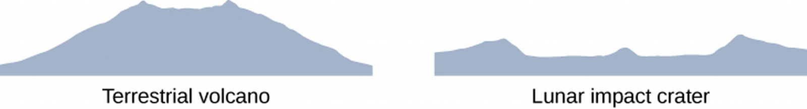
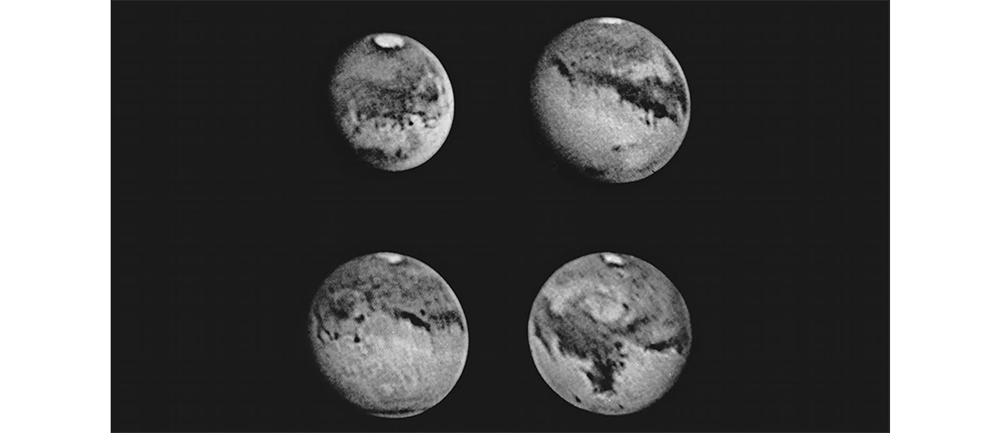
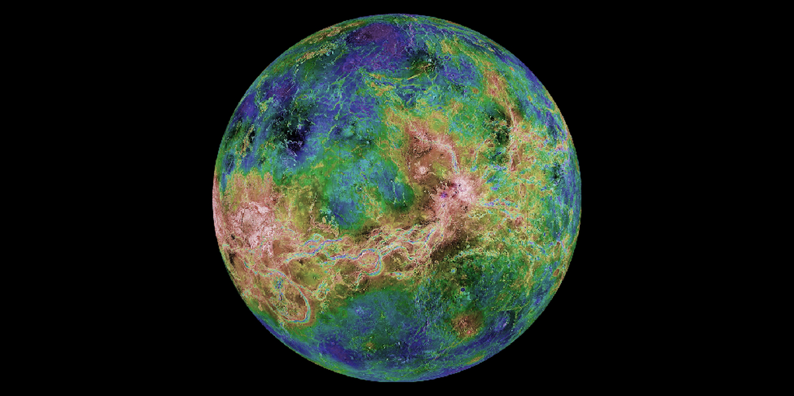
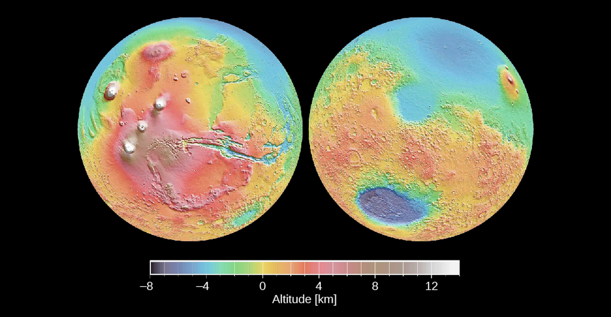
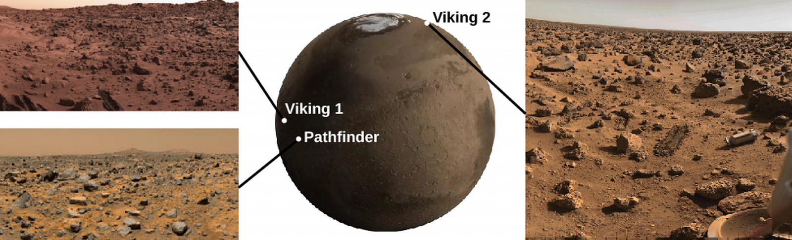
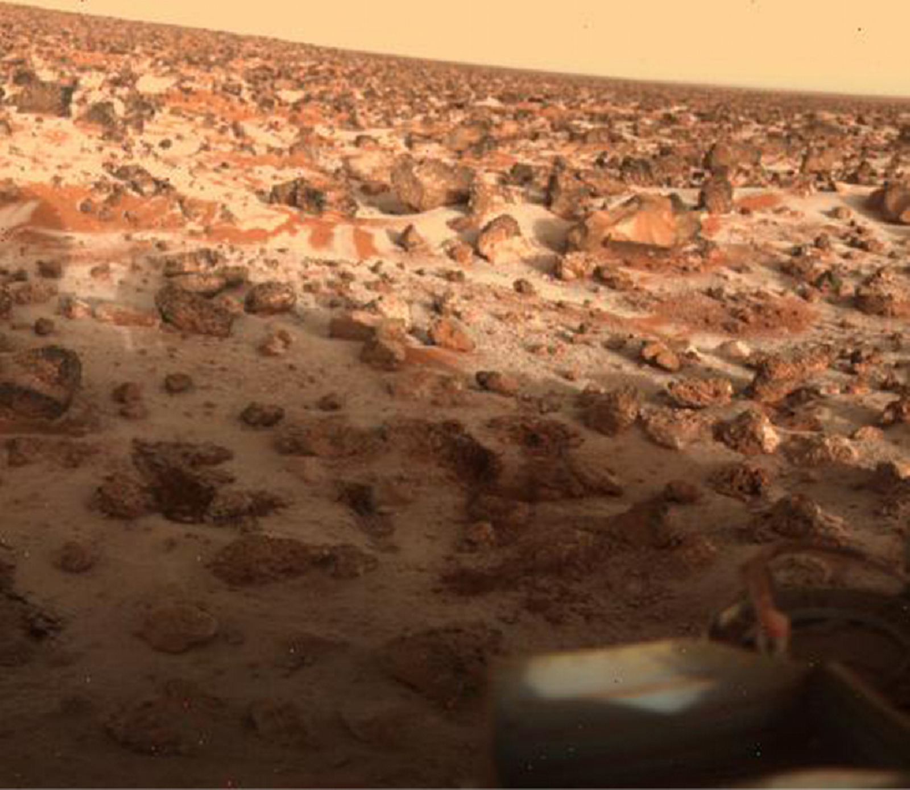
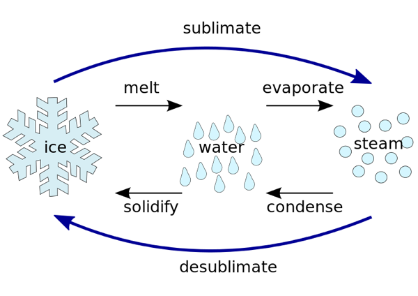
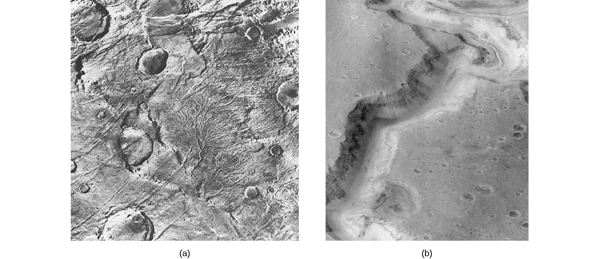

ASTR101 Ch 9-10
Ch 9 - Cratered Worlds
General Properties of the Moon
- The Moon has no atmosphere, so that ancient happenings are preserved, and the Moon is deficient volatiles.
- The Moon and Mercury share many similarities; see Table 9.1.
- Both are geologically dead.
Exploration of the Moon
- Lunar exploration began with telescopic observations.
- Russia took photos of the lunar far side in 1959 with Luna 3 and landed on its surface in 1966, transmitting pictures and data to Earth.
- The US Apollo program sent 12 astronauts to the lunar surface from 1968 to 1972; the first arrived in 1969. The program achieved three major objectives:
- Astronauts collected 400 kg of samples for analysis.
- Each landing after the first left a lunar surface experiment package (ALSEP).
- Orbiting Apollo command modules analyzed lunar surface from above.
- Lunar missions lasted until 1972.
Composition and Structure of the Moon
- Density of only 3.3 g/cm3, the Moon is made entirely of silicate rock. No large metal core (measured with seismometers). Little water on Moon in chemically bound form, in rocks.
- NASA crashed LCROSS (lunar crater observation and sensing satellite) into Moon's South pole at 9000 km/hr, releasing a plume of water vapor and other chemicals visible o other spacecrafts.
- Estimated total water on Moon is hundreds of billions of tons; only enough to fill a lake 100 miles across.
- Estimated to be from asteroids and comets, some small fraction of their water froze in extremely cold regions (cold traps).
The Lunar Surface
General Appearance
- Lots of craters named after scientists, vast splotches of darker lava flows erroneously recognized as seas (sea is mare in Latin) and named, eg., Mare Nubium. Prominent craters named after prominent scientists by Vatican scientists, except Galileo, who they named a small crater after.
- Though the moon appears similar, its geological features are created differently than Earth's.
Lunar History
- Lunar rocks were radioactively dated to be up to 3.3-4.4 billion years old, much older than Earth's. Keep in mind Earth and the Moon were created 4.5-4.6 billion years ago.
- Moon crust is made of 83% silicate rocks called anorthosites, in regions known as the lunar highlands, which are 4.1-4.4 billion years old.
- The maria cover 17% and are much less cratered, consisting mostly of dark-colored basalt from volcanic eruptions billions of years ago which covered impact basins of colliding material.
- Major lunar volcanic activity ceased about 3.3 billion years ago.
On the Lunar Surface
- "The surface is fine and powdery. I can pick it up loosely with my toe. But I can see the footprints of my boots and the treads in the fine sandy particles." - Neil Armstrong
- Boots sank several centimeters into fine dust of upper surface of lunar maria.
- Without atmosphere, Moon experiences greater temperature fluctuations, from -173 °C to above 100 °C.
Impact Craters
Volcanic Versus Impact Origin of Craters
- Astronomers didn't realize lunar craters were result of impacts—citing rarity of impact craters on Earth—and thought they were the result of volcanic activity.
- Grove Gilbert, a geologist, suggested they were formed from impacts.
- Turns out the impacts are circular because of the minimum speed that gravity gives them and their resulting symmetric explosions, but Gilbert's theory wasn't accepted until after WWI when such explosion craters were studied to be circular.

The Cratering Process
- Projectile penetrates 2-3 times its diameter into planet, will form 10-15 times its diameter of a crater.
- Resulting shockwave spread into planet with heat equivalent to nuclear bomb.
- Ejecta are thrown out of the crater, which fall like an ejecta blanket to fill the crater.
- Higher speed ejecta travel farther and can leave their own secondary craters.

- Different features are visible based on the lighting angle!

Using Crater Counts
- Recall that we can age planets using craters to see when the last smoothing activity took place.
- Can make inferences about craters based on craters on lunar maria or current number of projectiles (asteroids and comets)—eg, for the Moon, a 1 km crater should be produced on average every 200 millenia, a 10 km crater every few million years, and one or two 100 km craters every billion years.
- This results in an estimate of several billion years for the craters in the maria, which matches Moon rock sample radioactive dating.
- Comparing crater rates on highlands and maria on the Moon tells us that comets formations took place at a much higher rate before 3.8 billion years ago: highlands are 4.2 billions years old but have 10 times as many craters.

The Origin of the Moon
- Earlier hypotheses for Moon origin:
- Fission Theory: Moon was part of Earth but separated early on.
- Sister Theory: Moon formed together (but independently of Earth.
- Capture Theory: Moon formed elsewhere and was captured by Earth.
- Do they hold up?
- No - Modern calculations show this sort of splitting to be impossible, and some chemical differences unexplained.
- Maybe.
- No - No way for the Moon to slow down enough after entering Solar System to orbit Earth, and the orbit would be more eccentric, and their compositions are too similar.
The Giant Impact Hypothesis
- Giant Impact Hypothesis: An Mars-sized object hit Earth, nearly breaking the planet apart, creating a dust cloud that condensed into the Moon—there is increasing evidence of projectiles of planetary mass in inner Solar System during terrestrial planet formation.
- This explains the Moon's compositional similarity to Earth and its lack of metal, as well as the loss of volatile elements.
Mercury
Mercury's Orbit
- Nearest to the Sun, so fastest orbit by Kepler's 3rd Law (88 Earth-day period).
- Named for Roman messenger god.
- Too close to Sun to see, best seen as far from Sun as possible.
- Has a higher eccentricity of 0.206.
Composition and Structure
- Smallest planet (not counting dwarf planets) at 4878-km diameter.
- Density of 5.4 g/cm3, meaning it differs in composition from Moon.
- Must be composed of heavier metals, probably 60% iron-nickel core by mass and remainder in silicates, with a core of 3500 km and mantle of remaining 700 km.
- Does have a weak magnetic field, consistent with large metal core, part of which must be liquid.

Mercury's Strange Rotation
- Thought to rotate so one side always faced the Sun (like the Moon orbits Earth).
- This was refuted in 1960s with Doppler radar results showing 2:3 relationship (59:88 days).

- Long days and nights, temperatures range from 100–700 K.
The Surface of Mercury
- Lots of craters and basins up to 1300 km in diameter.
- Scarps (cliffs) over a kilometer high and hundreds long, as well as ridges and plains, as measured by MESSENGER spacecraft, which also detected water ice in teh poles (like the Moon!).
- No evidence of plates, but the planet seems to have shrunk in its history, wrinkling the crust.
The Origin of Mercury
- Composed mostly of metal, but astronomers think it should have formed with the same ratio of metal to silicate as Earth—how did it lose so much rocky material?
- Probably also due to early giant impacts, leaving a body with an iron core.
Ch 10 - Earthlike Planets: Venus and Mars
The Nearest Planets: An Overview
- Venus and Mars are geologically alive like Earth, and unlike Mercury and the Moon.
- Mars and Venus are among the brightest night sky objects.
- Venus' orbit is 3/4 as wide as Earth's, Mars' orbit is 1.5 times as wide.
- Venus comes closer to Earth (40 million km) than any other planet.
Appearance
- Venus is bright and exhibits the full range of phases.
- Its surface is shrouded by dense clouds 70% reflective.

- Mars is red due to Iron oxides (rust) in its soil.
- Can see from Earth at resolution of 100 km (no topographic features, but see ice caps!).
- Giovanni Schiparelli described "canale" (channels; long straight features) mistranslated as canals, leading to misunderstandings of intelligent life. Larger telescopes clarified there are no canals; the brain tends to see patterns in noise.

Rotation of the Planets
- Determined Mars' by examining motion of permanent surface markings. Sidereal day of 24:37:23 (hour:minute:seconds), close to Earth's! Accurate to within a few hundredth seconds (200 years of measurements).
- Mars tilts by 25°, also close to Earth, and shares similar seasons. Year is twice as long as Earth's, however.
- Venus' retrograde rotation period of 243 days (slow) measured by topographical features that show up in radar signals.
- What's a day on Venus like with the retrograde rotation? A Venus year is 225 Earth days, a Venus day is 243 Earth days—the day is longer than the year! Time for Sun to return to its position in Venus' sky is 117 Earth Days.
- Retrograde Venus spin probably caused by large early collisions.
Basic Properties of Venus and Mars
- Venus mass is .82 Earth's, its density almost identical to Earth's, shares about the same average geological activity. However, its surface pressure is 100 times greater, its temperature is over 850° F.
- Mars is .11 Earth's mass, but is large enough to retain an atmosphere. Long ago, it had a thick atmosphere and seas of liquid water, and a chance of life on the planet!
- Even now, there is a chance of some form of life in Mars' protected environments.
The Geology of Venus
Spacecraft Exploration of Venus
- Half of the 50 spacecraft were successful. Venera 7 was the first probe to land on its surface in 1970, and operated for 23 minutes because of the high temperatures. Several Venera craft followed.
- For a global surface study, need to resort to radar (due to dense clouds).
- 1970s, US Pioneer creates the first global radar map, improved in 1980s by Soviet Venera 15 and 16. Magellan produced 100 m-resolution images using an imaging radar to map Venus!

Probing Through the Clouds of Venus
- No water or ice on Venus, slow wind speeds, so no erosion of features caused by volcanic eruptions and impact craters.
- No evidence of subduction zones or plate tectonics in Venus' history despite convection in its mantle.
- 75% of surface is lava plains, which is not due to tectonics but formed like the Moon through lava eruptions.
- Rising above lava plains are two full-scale mountainous continents, named Aphrodite, about the size of Africa, along the equator, and Ishtar, about the size of Australia and containing the highest mountains, the Maxwell Mountains, 11 km above the lava plains
Craters and the Age of the Venus Surface
- Venus has a crater larger than Chicxulub: Mead, at 275 km, but no craters larger than the lunar impact basins.
- Craters less than 1 km in diameter burn up in Venus' atmosphere, and those up to 3 km break in the atmosphere and cause distorted craters, but we can ignore atmospheric shielding if we only analyze craters 30 km and larger in diameter, caused by projectiles greater than 3 km in diameter.
- Oldest large craters are 300-600 million years old, evidence of geological activity.
- Craters look fresh, without erosion.
- Not a lot of activit since venusian lava plains resurfaced 300-600 million years ago, during a mysterious planet-wide volcanic convulsion.
Volcanoes on Venus
- Many volcanoes, the largest 500 km across and 3 km high (broader and lower than Mauna Loa in Hawai'i), with a caldera (volcanic crater) at the top 40 km across. Volcanoes of various shapes (pancakde volcanoes!) and sizes, ranging the way down to Magellan's resolution.
- Lava that doesn't make it to the surface can bulge up the crust (like the Sierra Nevada mountains in California). These bulges create circular features called coronae.

Figure 10: "Miss Piggy" corona.
Tectonic Activity
- No tectonic plates in Venus, but convection of molten material in the mantle causes stresses on the crust called tectonic forces, resulting in tectonic features such as ridges, cracks, and mountains.

Figure 11: Lowland plains
On Venus' Surface
- Illumination like a heavily overcast Earth day, clouds make sunlight appear red, temperatures that melt lead, 90 bar surface pressure.

The Massive Atmosphere of Venus
Composition and Structure of the Atmosphere
- 96% CO2, 3.5% N2. Earth also once had majority CO2, and Mars has a similar composition (though Venus is 10,000 times more massive).
- Venus has a very dry atmosphere, unlike Earth.
- Troposphere up to 50 km, with Sulfuric acid droplets—formed by combining water and the sulfur dioxide emitted from volcanoes—at higher elevations. Convection currents rise near the equator and fall over the poles. Large pressures even out temperature fluctuations in the lower elevations of the troposphere.

Surface Temperature on Venus
- Venus' surface of 700 K is much hotter than you'd expect from the sunlight that reaches it due to greenhouse effects. The effect is concentrated in Venus, which has nearly a million times more CO2.
- It's possible Venus once had a climate similar to Earth's, with water oceans and its CO2 dissolved in the ocean or rocks. Even a little additional heating could result to increased evaporation of water and gas release from rocks, triggering the greenhouse effect, which in turn triggers more evaporation, in a situation termed the runaway greenhouse effect.
- Once water evaporates, UV rays from the Sun can split it into hydrogen and oxygen atoms, the former can escape, and the latter combine with rocks, in a process that is very difficult to reverse. There's evidence that this is what happened to the water once present on Venus.
The Geology of Mars
Spacecraft Exploration of Mars
- Evidence suggests Mars once had blue skies and lakes of liquid water, and it's a candidate for habitation.
- Again, more than 50 spacecraft launched, half fully successful.
- First visited in 1965 by US Mariner 4 which transmitted photos, surface was mapped in 1971 by Mariner 9 with a resolution of 1 km, the first spacecraft to orbit another planet. Found canyons, polar cap layers, volcanoes, and channels appearing to have been once cut by running water.
- 1970s' twin Viking spacecraft had two orbiters surveying the planet for a safe spot to land two landers on the surface and resulted in multiple high resolution photos and complex experiments.
- In 1990s, Mars Global Surveyor (MGS) landed on Mars and mapped its surface over one martian year, found evidence of ancient running water!
- Odyssee launched in 2003 found a large amount of subsurface hydrogen (probably frozen water).
- In 2008, Phoenix measured water in the edge of the ice caps.
- 2011, Curiosity (1-ton in weight and size of a subcompact car) arrived with plutonium-powered generators (to avoid dependence on sunlight which wavers with dust deposits) to investigate climate and geology and assess past and present habitability.

Figure 14: Mars map from MGS' laser alt-meter.
Martian Samples
- We haven't brought any from Mars (though it's in the planning stages), but there are Martian meteorites on Earth in study by scientists. Large impacts with Mars earlier in its history left fragments in space, a few of which collided with Earth some few million years later. They are verified Martian by their composition.
- Rocks from the Moon have also reached us in the form of meteorites, though we could only identify their origin once we examined rocks on the Moon.
- The Martian meteorites contained water and organic (carbon-based) compounds in them, suggesting water and life on its surface.
Global Properties of Mars
- Just over half Earth's diameter, with an average density of 3.9 g/cm3. No global magnetic field, though surface magnetizations suggest a magnetic field billions of years ago, implying the present lack of conducting liquid material in its core.
- Has continental highlands and widespread lowland volcanic plains like Venus, with a total range of 31 km. Lowland plains look like the lunar maria.
- Southern hemisphere is heavily cratered, northern is younger with plains 5 km lower, a geological division like Earth, the Moon, and Venus.
- Near equator is a high continent the size of North America called the Tharsis bulge, atop which are four great volcanoes.
Figure 15: Mars map from MGS' laser alt-meter.
Volcanoes on Mars
- Lowland Martian plains have same density of impact craters, implying they formed about the same time 3-4 billion years ago.
- Largest Martian volcano is Olympus Mons (Mount Olympus), with a half-kilometer diameter and rising 20 km over the plains—thrice the size of the tallest Earthly mountain, with a volume 100 times greater than Hawai'i's Mauna Loa. The caldera alone is about the size of LA.
- Olympus Mons is only up to about 100 million years old since it has few impact craters, and so may still be active.

Martian Cracks and Canyons
- The Tharsis bulge results in tectonic cracking of the crust. The Valles Marineris ("Mariner Valleys") are a large canyon extending about 5000 km (nearly a quarter around Mars!). It's 7 km deep and 100 km wide, and the entire Grand Canyon could fit in one of its side canyons!
- Valles Marineris weren't made by water, but by tectonic forces.

The View on the Martian Surface
- Surface soil measured to consist of clays and iron oxides (no surprise there), with rocks of the same volcanic origin and composition.

- Found places with sedimentary layers, rock layers formed in the presence of water.
- Even found water frost on the ground during the Winter

- Most winds only a few kph, but Mars can have powerful planet-engulfing windstorms that cover the planet in wind-blown dust.
- Through rovers, found dust devils on Mars rising from convection currents.
Water and Life on Mars
Atmosphere and Clouds on Mars
- Martian atmosphere is 0.007 bar, temperature around -125 °C to 20 °C
- Martian air is approximately 95% carbon dioxide, 3% nitrogen, and 2% argon.
- Proportions like Venus, but thin atmosphere means less total gas.
- High velocity Martian winds are also lower density (weaker), but they raise up dust.
- Types of clouds: dust clouds, water-ice clouds (like Earth's), and CO2 clouds (unlike Earth).
- Water isn't stable in its liquid form in Martian surface conditions.

Figure 20: (C) Wikipedia, by Cmglee, with modifications; CC BY-SA 3.0
- Salt lowers water's freezing point, so salt water can exist on the Martian surface under certain conditions.

The Polar Caps
- Recall Martian caps visible from Earth, and change size with Martian seasons.
- Made of dry ice (CO2) condensed from atmosphere, when temperature drops below 150 K.
- These seasonal caps are thin, compared to the permanent or residual caps.
- Diameter of Southern residual cap is 350 km, Northern 1000 km.
- Southern cap is CO2 and water ice, Northern cap is just water ice.
- Northern cap is 3 km thick with volume of 107 km3.
- Mars seems to have ice age cycles very similar to ours.

Figure 22: The Phoenix spacecraft dug a trench near the North polar cap to find water ice. (C) Study.com.
Channels and Gullies on Mars
- Evidence of ancient liquid bodies of water in three sets:
- Highland equatorial plains contain lots of small 4 billion-year-old runoff channels a few meters deep, 10s of meters wide, and 10-20 km long, characteristic of rainwater runoff.
- Larger outflow channels 10 km or more wide and hundreds long, must have required larger volumes of water than rainfall. Originate from sites with frozen water in soil (permafrost) suggesting ancient flooding.
- Gullies were first discovered by the MGS, and are smaller than the previous two, and much younger, suggesting very recent but brief liquid water activity.
- No liquid bodies on Mars today.

Figure 23: Runoff and Outflow channels.
- Dark streaks (recurring slope lineae) caused by water—spectra show presence of hydrated salts, as through evaporation of salty water, which can remain liquid long enough to flow downstream 100+ m. The source of the water is unknown.

Figure 24: Gullies on wall of Garni Crater.
Ancient Lakes and Glaciers
- Spirit, Opportunity, and Curiosity rovers sought to examine sedimentary deposits of dried-out lake beds for evidence of water.
- Spirit's mission blocked by thin lava flows.
- Opportunity detected sedimentary rocks containing chemical evidence of evaporation of a shallow salty lake, containing hermatite which forms only in watery environments!
- Curiosity found evidence of water erosion in the Gale crater, found actions formed by shallow water.
- Large quantities of ice just below Martian surface covered with dirt and dust.
Climate Change on Mars
- Like Earth and Venus, Mars formed with high temperature due to greenhouse effect of its then atmosphere.
- Its low gravity allowed its atmosphere to escape, lessening the greenhouse effect and lowering its temperature.
- Mars eventually so cold that atmospheric water freezes out of atmosphere, resulting in runaway frefrigerator effect (opposite of Venus' runaway greenhouse effect).
- Water a few meters under Martian surface may be (perhaps salty) liquid with temperature insulated by layer of rock.
The Search for Life on Mars
- Specific experiments to detect life and organic matter on Mars (esp. Viking experiments) have not found any.
- Mars more likely to have housed life long ago; present search focuses on fossils.
Divergent Planetary Motion
- Though they are neighbors and all started with a similar mix of silicates and metals, Venus is now hot and dry, Mars cold and dry, and Earth habitable due to their differing evolutions.
- Better understanding of Mars and Venus' evolution might help stabilize Earth's.